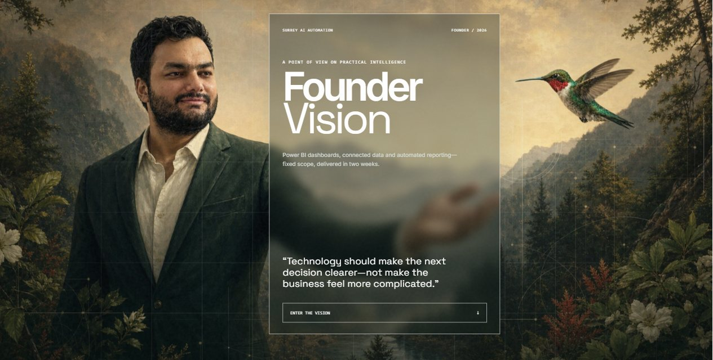

Between the requirement and the record
Most ERP problems aren't software problems. They're a mismatch between what a team meant to record and what the system let them record. My work sits in that gap: gathering the requirement properly, configuring the module to match it, then proving with data that the match held.
At Rubicon Organics I support Finance, Supply Chain, Production and Cultivation on a single Business Central instance, with integrations reaching into SQL, Azure and Elevated Signals on the cultivation side. The reporting layer — Power BI, Power Query, DAX — is where the work becomes visible, but the durable part is upstream: validation rules, audit trails, SOPs, and root-cause fixes that stop an incident from returning.
Before Canada, seven years at Tata Consultancy Services in Delhi doing the same discipline at enterprise scale — KPI definition, reporting standards, and the liaison work between business users and IT. Outside the day job I build the automation side of the same problem through my own practice, Surrey AI Automation.
Technology should make the next decision clearer — not make the business feel more complicated.
Ten years on one axis
Posting periods to scale, 2016 to date, with duration at right. The Lululemon engagement was a three-month contract by design.
What changed, and by how much
Delivered at Rubicon Organics, January 2024 onward. Figures are printed in red where negative, per ledger convention — here every negative is an improvement.
| Measure | Basis | Magnitude | Change |
|---|---|---|---|
| Data synchronisation time | Integration | −40% | |
| ERP training adoption | Enablement | +35% | |
| Recurring incidents | Support | −30% | |
| Transaction data accuracy | Audit | +25% | |
| Four measures · one shared scale | 0% ————— 25% ————— 50% | Verified | |
Three systems, one discipline
ERP Data Analyst
Rubicon Organics- Own ERP data analysis, reporting and system support for 70–100 users across Finance, Supply Chain, Production and Cultivation.
- Configure, test and optimise Dynamics 365 Business Central modules and their integrations with SQL, Azure and Elevated Signals.
- Built the validation and audit framework that lifted transaction accuracy 25% and surfaced errors for correction before month-end.
- Run root-cause analysis and ship permanent fixes — recurring incidents down 30%.
- Automate reporting with Power Query, DAX and Power Automate; maintain the Power BI and Excel models behind KPI review.
- Lead UAT and end-user training, and contribute to data governance, SOP documentation and pipeline improvements.
Dynamics 365 BC · Power BI · SQL · Azure · DAX · Power Query · Power Automate
System Analyst
Lululemon- Analysed warehouse operations to gather requirements for system enhancements that improved order accuracy.
- Configured and integrated label-printing and inventory applications — Zebra, BarTender, Manhattan Active — against core ERP modules.
- Built ETL between warehouse label and inventory systems and central databases.
- Performed root-cause analysis on data discrepancies and corrected them at source with the operations team, minimising supply-chain disruption.
- Managed IT asset provisioning and user roles through a period of organisational change, supporting access security and continuity.
Manhattan Active · Zebra · BarTender · ETL · Excel
Senior Process Associate
Tata Consultancy Services- Collected and formalised business requirements, KPIs and reporting standards, driving enterprise-wide alignment across procurement, finance and operations.
- Designed resource and asset allocation models in Excel Power Query and Power Pivot, supporting planning and capacity reporting.
- Built BI dashboards in Power BI and Tableau, and ran statistical analysis to surface trends that informed business strategy.
- Streamlined data collection and reporting, automating repeated tasks to cut manual effort and raise accuracy.
- Facilitated UAT cycles and change management through successive rollouts, acting as the standing liaison between business users and IT.
Power BI · Tableau · Power Pivot · Power Query · UAT
Built outside the ticket queue
Surrey AI Automation
surreyaiautomation.online- Founded an AI-automation practice serving data-heavy businesses in Metro Vancouver: Power BI dashboards, reporting automation and ERP/data integration on fixed-price engagements.
- Designed and built the site end to end — hand-written HTML, CSS and JS with no build step, a serverless contact endpoint, and automated validators that gate every page on structure, metadata and link integrity before it ships.

Power BI · Cloudflare Pages · Serverless · HTML/CSS/JS
Batch-to-lot attribute propagation
Power Platform × Business Central- Operations manages product by batch; Business Central tracks attributes by lot, one batch to many. Every lot was edited by hand. Built a canvas app and flow that edits once at batch level and propagates, with a preview before writing and a per-lot result after.
- Established the write path by testing rather than assuming — the vendor API turned out to be read-only, so writes were routed through a maintained OData endpoint with proper eTag concurrency control.
- Encoded the integrity rules the dashboards depend on: coupled fields stay in step, propagation is scoped to a single item so one QA status cannot leak across unrelated SKUs, and destructive blank writes are refused outright.
Power Apps · Power Automate · OData v4 · Business Central · Python
Jarvis Agent OS
Multi-agent orchestration desktop- A desktop application for running and supervising multiple AI coding agents side by side — embedded terminals, a code editor, git integration and local persistence in one workspace.
- Built to scratch a real itch: keeping several long-running agent sessions legible without living in a dozen terminal tabs.
Electron · React · TypeScript · SQLite · node-pty
How I work
Four habits that account for most of the figures posted in section 03.
Documentation describes the happy case. I test the actual endpoint before designing against it — which is how a read-only vendor API got caught before it became a shipped dead end.
Batch propagationA recurring incident is a design defect wearing a support costume. Tracing each one to its origin and correcting it there is what took recurrences down by a third.
−30% incidentsA report that renders a wrong number confidently is worse than no report at all. Validation and audit rules sit at the point of entry, so errors surface while they are still correctable.
+25% accuracyManual reporting is a standing tax. Power Query, DAX and Power Automate retire the repeat work, and the hours go back into analysis nobody was doing before.
−40% sync timeTools, domains, credentials
| Class | Holdings | Daily |
|---|---|---|
| Platform | Dynamics 365 Business Central, Power BI, SQL Server, Azure, Power Apps, Power Automate, Elevated Signals, Manhattan Active, Tableau | 2 |
| Data | DAX, Power Query, data modelling, ETL pipelines, OData / REST, Excel & Power Pivot, KPI design, statistical analysis | 2 |
| Practice | Requirements gathering, ERP configuration, UAT & change management, data governance, root-cause analysis, SOP documentation, process mapping, stakeholder management | 2 |
| Sector | Exposure | Via |
|---|---|---|
| Cannabis & CPG | Cultivation, production, lot and batch traceability | Rubicon |
| Apparel retail | Warehouse, fulfilment, high-volume distribution | Lululemon |
| IT services | Procurement, finance, enterprise reporting | TCS |
| Finance operations | Month-end, audit readiness, KPI review | All three |
| Award | Institution | Year |
|---|---|---|
| MBA, Data Analytics | University Canada West — Vancouver, BC | 2023 |
| ITIL v4 Foundation | Service management certification | 2019 |
| BE, Electronics & Telecommunication | Amravati University — India | 2012 |
Open to conversations
Business systems analysis, ERP data work, and reporting roles — particularly where a Business Central instance needs someone who can hold both the requirement and the query. Automation engagements through Surrey AI Automation as well.